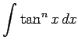

Inhalt Index DeskTop Bronstein

 Integralrechnung Unbestimmtes Integral Integration trigonometrischer Funktionen Vereinfachte Methoden
Integralrechnung Unbestimmtes Integral Integration trigonometrischer Funktionen Vereinfachte Methoden


|  | = | ||
| = | (8.32a) |
Durch Wiederholung dieses Verfahrens der Potenzerniedrigung ergibt sich für gerades n bzw. ungerades n schließlich das Integral
| (8.32b) |